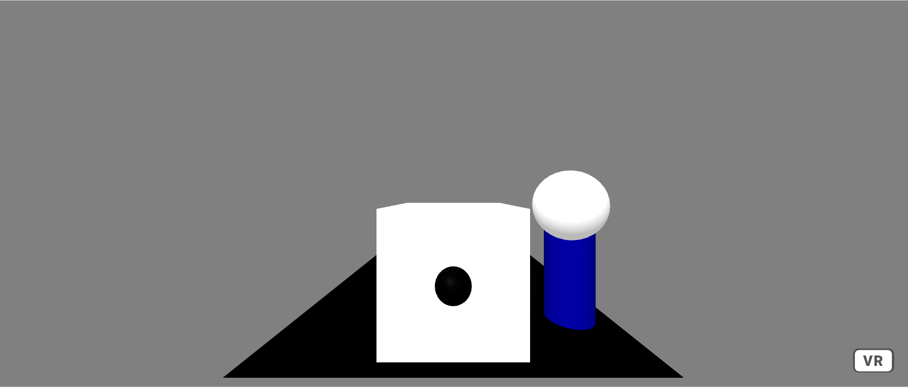
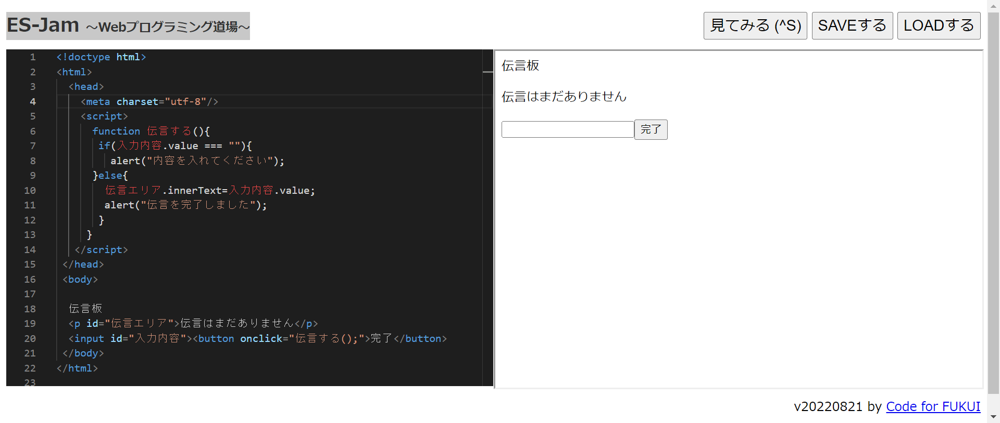

第3週目
3-1 JavaScript体験：VR空間を作る

VR空間
1.内容
ES-Jam 〜Webプログラミング道場〜にA-Frame-のテンプレートを置き、簡易的な3Dモデルをプログラミングで作成した。
2.感想
今までのプログラミングではゲームを作ったり、ロボットを動かしたりするプログラムを作成してきたのでCAD以外でも今回のように3Dモデルを作成できると知り驚きました。
3-2 JavaScript体験：伝言プログラムを作る

伝言板
1.内容
ES-Jam 〜Webプログラミング道場〜を使用し、プログラミングで伝言板を作成した。
2.感想
これまでの総工実習ではブロックプログラミングしか行っていなかったため、今回のような簡易的な伝言板を作成するのにもたくさんの工程で組まれたプログラムが必要となることは
知らなかったのでさらにプログラミングのことを知ることができて良い経験になったと思います。
3-3 JavaScriptプログラムの３次元空間の体験
1.内容
VRゴーグルをつけた状態でシューティングゲームのできるプログラムを体験した。
2.感想
ワープしたりシューティングゲームができるVRもさっきまで3Dモデルや伝言板を作成したJavaScriptで作られたものということにとても驚き、プログラミングは未知数だなと感じました。
3Dモデルを作成していた時まではVR空間というものの実感があまりなかったのですが今回のVR体験で理解できたと思います。